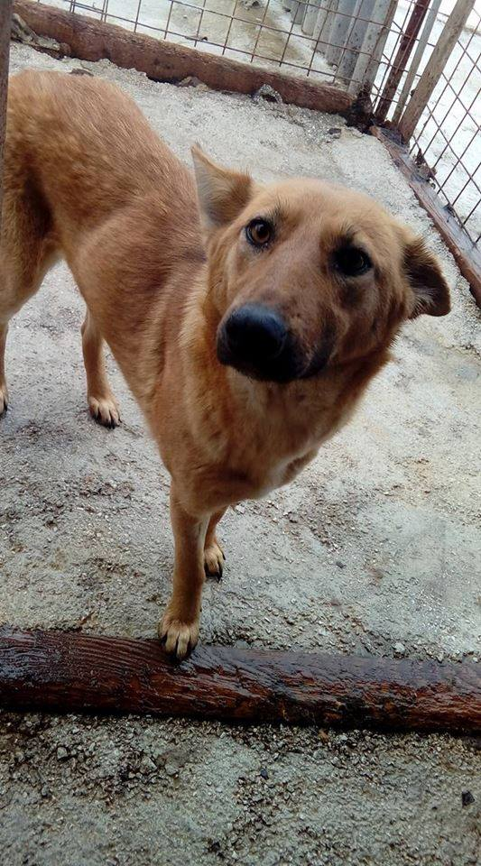

Tina
Breed: Mix
Gender: female
Color: black
Age: 2 years
Size: 3kg
Good with: kids, cats
My story
Meet lovely Nella! (beginning of video) When Nelson was kicked and his eye was injured to total loss I had to engage in rescue operation at night. I discovered that the same man who kicked Nelson also kicked one of his sisters and she was found nearby the location by another girl with the same situation, again loss of an eye.
It was impossible to get Ella and the puppies to safe as the man who was kicking them did not let us take them. He was out of control and saying they are better on the street and breeding and he will give them to some shepherds in his village. Ella and her puppies were rescued although the man took revenge and stole the dogs that the girl who was feeding them had in her yard.
We discovered he was really a hoarder. we thought that we got all of them but then the girl spotted that man again and one very similar puppy to Nelsons was following him. She previously had been in a psychical fight with him so she laid low as I advised her that man is dangerous and that she should not show that we discovered the last puppy was taken by him. After months (just as time for heat approached) he let the puppy out back on the street and naturally she came to the bushes where she was born.
The girl informed me without making any noise and we secretly lead her away from there with some food and as soon as we were safe to get her we grabbed her and put her in the car together safely and immediately made appointment and took her to be sterilized as we did not know if that horrible man will appear from somewhere around the corner and claim the dog from us.
Now she is done and safe and never going back there. We gave her a name Nella after Nelson and Ella the mother. She is ready to travel - as are all the other dogs there.